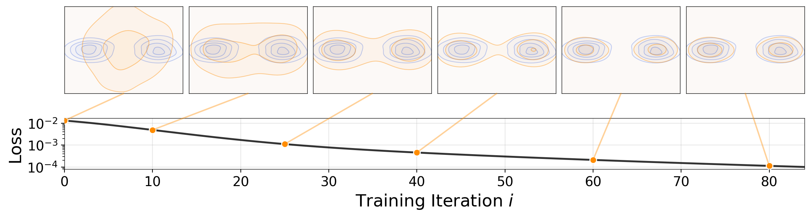
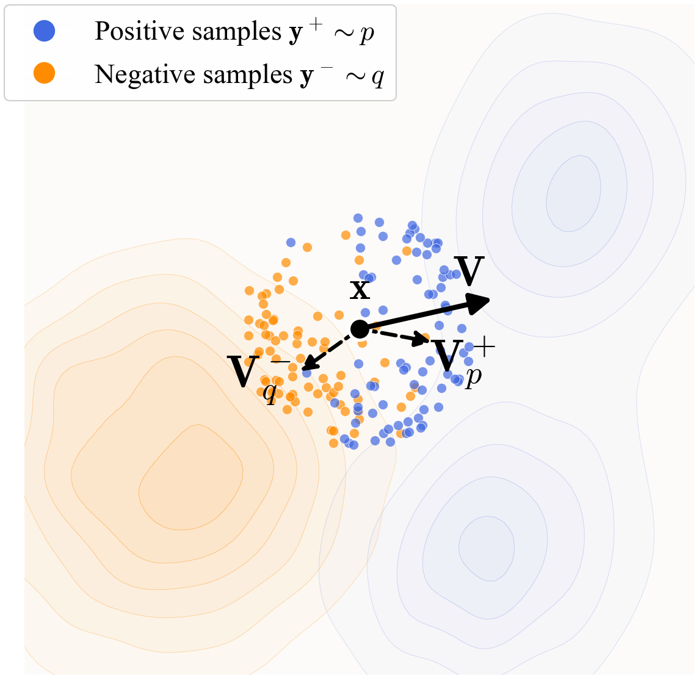
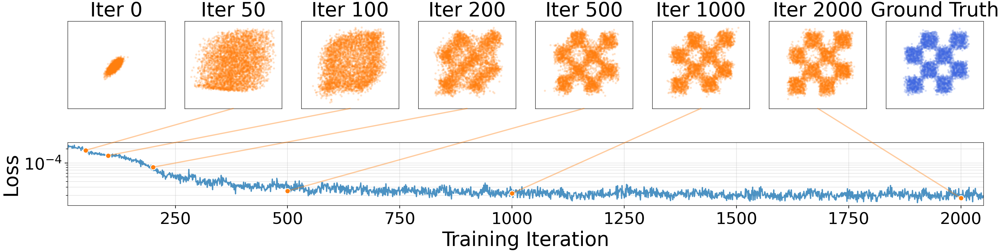
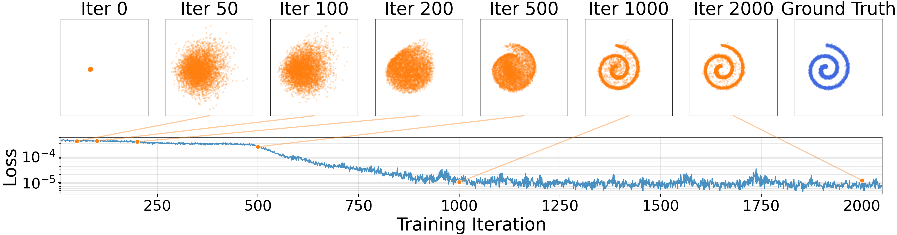
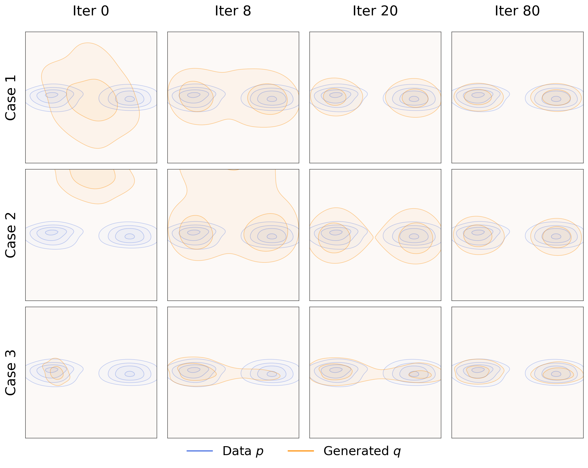
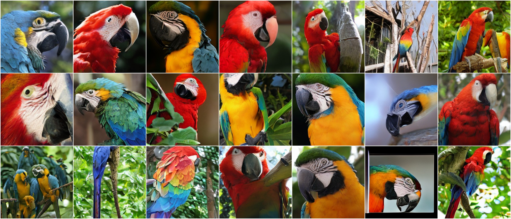
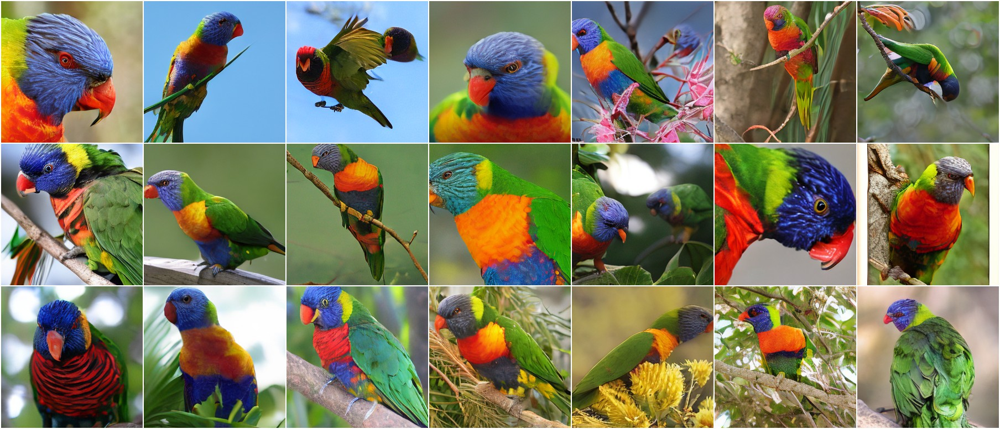
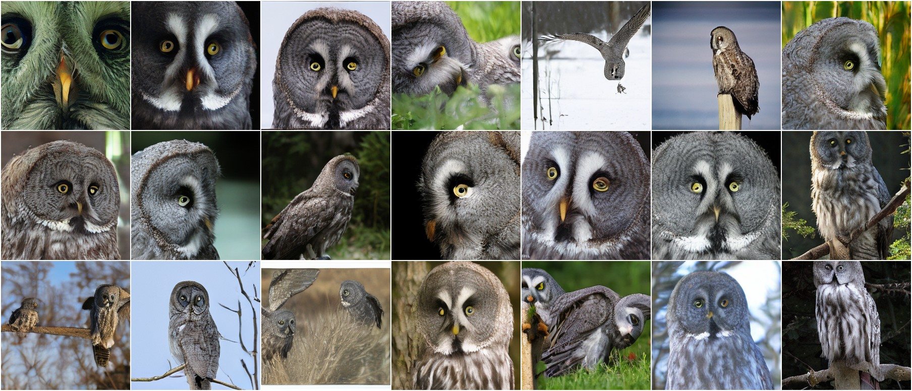
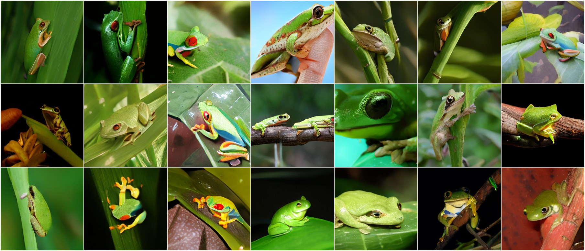

An interactive explainer
Generative Modeling via Drifting
Modern generative models — diffusion, flow matching, autoregressive — share a trick: split a hard transformation into many small ones, applied iteratively at inference time. Drifting Models propose the opposite. Push the iteration out of inference entirely, leaving a single forward pass to generate an image. State of the art on one-step ImageNet 256×256 generation: FID 1.54, competitive with diffusion models that need 500× the compute per image.

Open the hood of any recent image diffusion model and you'll see the same loop. Start with noise. Take a step. Take another. Take 50, or 250, or 500 more. After all that, you finally have a picture. The model is a function. Generation is a function call. So why are we calling it hundreds of times to make one sample?
Because — the story goes — direct mapping from noise to a high-resolution image is too hard for a single neural network. Diffusion's contribution wasn't a better network; it was a clever decomposition of the problem into many tiny denoising steps, each of which the network can handle. Inference is iterative because the original task was too big.
Drifting Models call that bluff. The authors argue that the iteration is necessary, but it doesn't have to happen at inference time. Neural network training is already iterative — that's what stochastic gradient descent does. If we design things right, every SGD step can play the role of a small denoising step. By the end of training, the network has internalized the full mapping into its weights, and inference becomes a single forward pass.
The result: a 463M-parameter generator that beats 675M-parameter multi-step diffusion models on ImageNet, while running ~500× faster per sample.
1. The pushforward view of generation
To explain how drifting works, we first need to agree on a way of looking at generative models. The cleanest viewpoint is the pushforward formulation.
A generator is a neural network $f: \mathbb{R}^C \to \mathbb{R}^D$. You feed it noise $\varepsilon \sim p_\varepsilon$ (some easy prior, like a Gaussian) and it produces an output $x = f(\varepsilon) \in \mathbb{R}^D$.
As $\varepsilon$ varies over its distribution, $x$ inherits a distribution of its own. That distribution is what's called the pushforward of $p_\varepsilon$ under $f$:
$$ q = f_\# p_\varepsilon $$
Read $f_\#$ as "push the input distribution through $f$." The goal of generative modeling is to find an $f$ such that the resulting $q$ matches $p_\text{data}$ — the distribution of real images, or sentences, or molecules, or whatever.
The two big paradigms differ in how they realize this push:
- Diffusion / flow matching: decompose the push into many small steps applied at inference time. The network maps slightly noisy samples to slightly cleaner ones; iterate 50–250 times to get from noise to data.
- Drifting Models: the network is non-iterative — one forward pass, noise to image. The iteration happens at training time, where each SGD step drifts the network's output distribution closer to the target.
Both viewpoints decompose the same hard mapping into many easy ones. The choice is just when the iteration happens. Drifting Models claim that putting the iteration into training gives you free inference, at no cost in quality.
2. Move the iteration to training
Here is the conceptual move. Training is naturally a sequence: $f_0, f_1, f_2, \dots, f_T$, where $f_{i+1}$ is the network after one SGD step on $f_i$. Each $f_i$ has its own pushforward distribution: $q_i = (f_i)_\# p_\varepsilon$. So training is a sequence of distributions $q_0, q_1, q_2, \dots, q_T$, ideally converging to $p_\text{data}$.
Now zoom in on a specific noise sample $\varepsilon$. Before the SGD step, it gets mapped to $x_i = f_i(\varepsilon)$. After the SGD step, the same $\varepsilon$ gets mapped to $x_{i+1} = f_{i+1}(\varepsilon)$. The sample moved! Define this movement as the drift:
$$ \Delta x_i = f_{i+1}(\varepsilon) - f_i(\varepsilon),\qquad x_{i+1} = x_i + \Delta x_i $$
This is just bookkeeping — a tautology about how SGD changes the network's outputs. But it sets up a design question: what if we got to design $\Delta x_i$ directly? Pick the perfect drift for each sample at every iteration, then engineer the SGD step to realize it.
3. The drifting field $V_{p,q}$
Let's give that "perfect drift" a name. Define a vector-valued function:
$$ V_{p,q}: \mathbb{R}^d \to \mathbb{R}^d $$
For every sample $x$ in the generator's output distribution, $V_{p,q}(x)$ specifies the drift that sample should take this iteration. Both $p$ (data) and $q$ (current generator distribution) enter the field — the right drift depends on where the data is and where the current generator is, relative to $x$.
The training-time update for each sample becomes:
$$ x_{i+1} = x_i + V_{p, q_i}(x_i) $$
Now the design question sharpens. What field $V_{p,q}$ should we use?
The minimum requirement is simple and powerful:
This single requirement — "no drift at equilibrium" — turns out to determine almost everything about the method.
4. The anti-symmetry trick
How do we guarantee that the drift vanishes when $q = p$, regardless of what the data actually looks like or where the generator currently is? You could try to enforce it case-by-case, but that gets messy fast.
The paper's slick trick: demand the drifting field is anti-symmetric under swapping its two arguments:
$$ V_{p,q}(x) = -V_{q,p}(x), \quad \forall x $$
That is: if you swap the roles of $p$ and $q$, the drift just flips sign. It's a constraint on the shape of the field, not on any specific point.
The equilibrium then follows in three lines.
The argument is so short you can fit it on a napkin:
- Assume $q = p$. Then the inputs to $V_{p,q}$ are literally the same as the inputs to $V_{q,p}$. So $V_{p,q}(x) = V_{q,p}(x)$.
- By anti-symmetry, $V_{q,p}(x) = -V_{p,q}(x)$.
- Combine: $V_{p,q}(x) = -V_{p,q}(x)$, which forces $V_{p,q}(x) = 0$.
Three lines, no calculus, no assumptions about the data. The anti-symmetry constraint is doing all the work. This is the key idea of the paper — everything that follows is plumbing.
5. Building $V$: attract and repel
Anti-symmetry is a constraint; we still need to build a specific $V$ that satisfies it. The paper's construction comes from mean-shift, a classical clustering algorithm that estimates local density gradients with kernels.
Take a generator sample $x$. Look around in two distributions:
- Look at the data. Sample real data points $y^+ \sim p$ and compute a weighted average of their displacement from $x$: $$ V^+_p(x) = \frac{1}{Z_p}\, \mathbb{E}_{y^+ \sim p}\left[ k(x, y^+)\, (y^+ - x) \right] $$ This vector points in the direction of nearby data. It attracts $x$.
- Look at other generator samples. Sample $y^- \sim q$ and do the same: $$ V^-_q(x) = \frac{1}{Z_q}\, \mathbb{E}_{y^- \sim q}\left[ k(x, y^-)\, (y^- - x) \right] $$ This points toward nearby other generator samples. We use it as a repulsion: we want $x$ to move away from where other generated samples already are, to prevent the generator from piling onto a few modes.
The full drifting field is just attraction minus repulsion:
$$ V_{p,q}(x) = V^+_p(x) - V^-_q(x) $$

You can also write this in a single, more symmetric form by substituting the two definitions:
$$ V_{p,q}(x) = \frac{1}{Z_p Z_q}\, \mathbb{E}_{y^+ \sim p,\ y^- \sim q} \left[ k(x, y^+)\, k(x, y^-)\, (y^+ - y^-) \right] $$
Now the anti-symmetry is obvious: swap $p$ and $q$ and you swap $y^+ \leftrightarrow y^-$, which flips the sign of $(y^+ - y^-)$. The kernel products and normalizers are unchanged. So $V_{p,q} = -V_{q,p}$, as required.
The kernel
The kernel $k$ measures sample similarity. The paper uses an exponential kernel:
$$ k(x, y) = \exp\!\left(-\frac{1}{\tau}\|x - y\|\right) $$
with temperature $\tau$. In practice, after normalization, this becomes a softmax over distances — essentially the same shape as the contrastive-learning weight in InfoNCE. Close neighbors get heavy weight; distant ones, almost none.
Anti-symmetry is critical (and they prove it)
The paper runs a beautiful destructive ablation: deliberately break anti-symmetry by rescaling one term. The results are catastrophic.
| Drifting field | FID ↓ |
|---|---|
| $V^+ - V^-$ (anti-symmetric) | 8.46 |
| $1.5\,V^+ - V^-$ | 41.05 |
| $V^+ - 1.5\,V^-$ | 46.28 |
| $2\,V^+ - V^-$ | 86.16 |
| $V^+ - 2\,V^-$ | 112.84 |
| $V^+$ only (no repulsion) | 177.14 |
B/2 model, 100 epochs on ImageNet (Table 1).
Without exact balance, the equilibrium condition is no longer mathematically guaranteed, and the generator either piles up at a small number of attractors (too much pull) or runs away from itself forever (too much push). The clean 3:1 ratio of FID between $V^+-V^-$ and $1.5\,V^+-V^-$ — for a tweak that looks harmless — is the cleanest experimental endorsement of the anti-symmetry constraint in the paper.
6. From field to loss
We have a drifting field. We want each SGD step to realize it. How do we phrase this as a differentiable loss?
The setup. The optimal $f_{\theta^*}$ has zero drift on its own outputs:
$$ f_{\theta^*}(\varepsilon) = f_{\theta^*}(\varepsilon) + V_{p, q_{\theta^*}}\!\left(f_{\theta^*}(\varepsilon)\right) $$
This is a fixed-point equation: the network output equals itself plus the drift, because the drift is zero.
Turn that into a fixed-point iteration. At step $i$, the target for $f_{\theta_{i+1}}$ is: "produce $f_{\theta_i}(\varepsilon) + V(f_{\theta_i}(\varepsilon))$." Minimize the squared distance:
$$ \mathcal{L} = \mathbb{E}_\varepsilon \left\|\, f_\theta(\varepsilon) \,-\, \text{sg}\!\left(f_\theta(\varepsilon) + V_{p, q_\theta}\!\left(f_\theta(\varepsilon)\right)\right) \right\|^2 $$
Two pieces to notice.
First, the stop-gradient ($\text{sg}$). The target — current output plus drift — is computed from the current network, but then frozen as a constant tensor that doesn't carry gradients. The optimizer only updates $f_\theta$ toward the frozen target. This is the same trick that powers BYOL, SimSiam, and many self-distillation methods. It's what lets us treat the regression target as a fixed point without dealing with the second-order effects of $f_\theta$ influencing its own target.
Second, the loss value equals $\mathbb{E}_\varepsilon \|V(f(\varepsilon))\|^2$. As the generator approaches equilibrium, $V$ shrinks toward zero, so the loss shrinks toward zero. The loss is a faithful proxy for distance from equilibrium.
The training step, in pseudocode:
# f: generator
# y_pos: [N_pos, D], real data samples
e = randn([N, C]) # noise
x = f(e) # [N, D], generated samples
y_neg = x # reuse the batch as negatives
V = compute_V(x, y_pos, y_neg)
x_drifted = stopgrad(x + V) # frozen target
loss = mse_loss(x - x_drifted)Notice that the negatives are the same batch as the positives. Each generator output is a potential $y^-$ for every other generator output. This is the same "look at your batch-mates" pattern from contrastive learning, which is no coincidence — the kernel weighting is structurally the InfoNCE softmax.
7. Drifting in feature space
One last technical point. Doing all this in raw pixel space doesn't work. The Euclidean distance between two natural images is a terrible measure of semantic similarity — two photographs of the same cat with the lighting slightly different have a huge pixel-wise distance.
So instead of comparing $x$ and $y$ directly, the paper applies the whole drifting machinery to features:
$$ \mathcal{L} = \sum_j \mathbb{E}\left\|\,\phi_j(x) - \text{sg}\!\left(\phi_j(x) + V\!\left(\phi_j(x)\right)\right)\right\|^2 $$
Here $\phi_j$ is the $j$-th-scale activation from a pretrained image encoder. The paper sweeps several options (MoCo, SimCLR, latent-MAE) and finds that the quality of the feature encoder directly determines generation FID — better representations → richer drift signal → better generation.
This connects Drifting Models to a wider story: many recent advances in image generation (REPA, LightningDiT, others) have shown that aligning the generator's internal representations with a strong pretrained encoder is a powerful regularizer. Drifting Models take it further by making the entire training signal live in feature space.
8. Watching the drift
Here is what the whole story looks like in 2-D: a generator distribution $q$ (orange) drifting toward a bimodal target $p$ (blue), with the velocity field shown as arrows. Each frame is one SGD step. The arrows shrink as $q$ approaches $p$ — that's $\|V\|^2$ heading to zero, which is the loss heading to zero.
40 SGD steps. The generator starts collapsed in the wrong place; the drifting field pulls it apart into two clean modes matching the data. The same dynamics drive the ImageNet training, just in 512-D feature space.



9. Results: SOTA in one step
Time for ImageNet 256×256, the standard benchmark for class-conditional image generation. Drifting Models are evaluated against the entire spectrum of recent multi-step and one-step methods.
The headline number
| Method | NFE | FID ↓ | IS ↑ |
|---|---|---|---|
| Multi-step diffusion/flow | — | — | — |
| DiT-XL/2 | 250 × 2 | 2.27 | 278.2 |
| SiT-XL/2 | 250 × 2 | 2.06 | 270.3 |
| SiT-XL/2 + REPA | 250 × 2 | 1.42 | 305.7 |
| LightningDiT-XL/2 | 250 × 2 | 1.35 | 295.3 |
| One-step (this paper) | — | — | — |
| Drifting Model, B/2 | 1 | 1.75 | 263.2 |
| Drifting Model, L/2 | 1 | 1.54 | 258.9 |
ImageNet 256×256, latent space (Table 5).
"NFE" is the number of forward evaluations of the generator per sample. Multi-step diffusion uses 250 forward passes per branch and runs two branches for CFG — 500 total. Drifting needs one. So the comparison is something like:
- Speed: 500× faster per sample.
- Quality: FID 1.54 vs DiT-XL/2's 2.27 — substantially better than the baseline multi-step model, and within striking distance of the best multi-step variants.
- Parameter count: 463M vs 675M — about a third smaller, too.
For one-step / few-step methods, this is the cleanest leap forward in a long time. There's no distillation — Drifting Models are trained from scratch with one objective.




10. Why this works
Drifting Models compress a lot of well-tested ideas into one tight package. None of the individual ingredients are new; the synthesis is.
The repulsion term solves mode collapse for free
Mode collapse is the classical failure mode of generative models: the generator finds a few high-likelihood points and refuses to produce anything else. Diffusion sidesteps this by construction (every step is a proper denoiser; you can't collapse). GANs notoriously suffer.
Drifting Models handle it via the repel term $V^-$. When the generator collapses onto one mode, every $y^-$ neighbor is nearby — so the repel field gets very strong. Samples get pushed away from themselves and out toward the other modes where the attract term $V^+$ takes over. Mode collapse is a self-destabilizing state, exactly the opposite of GAN dynamics.
Stop-gradient turns a fixed-point objective into a regression
Naively, optimizing $\mathbb{E}\|V\|^2$ requires backpropagation through the kernel sums, which depend on the distribution of generator outputs in non-trivial ways. The stop-gradient trick sidesteps that entirely: freeze the drifted target, regress toward it, take an SGD step, recompute the target, repeat. It's the same recipe that makes BYOL and SimSiam work without target networks.
Kernels in feature space, not pixel space
Drifting Models would not work in pixel space at high resolution — the Euclidean kernel is too brittle. By working in the feature space of a strong self-supervised encoder, the kernel measures semantic similarity, and the field gradients carry real signal even for high-resolution images. This dovetails with broader 2025 trends (REPA, VA-VAE) showing that aligning generators with pretrained encoders is a powerful regularizer.
The anti-symmetry constraint as principled design
Most generative models work because their objectives are convex or quasi-convex enough that SGD finds something useful. Drifting Models work because their fixed point is provably at $q = p$, by an algebraic identity, not an empirical happy accident. The ablation table on anti-symmetry is the experimental shadow of that proof — break the symmetry and FID multiplies by 5× to 20×.
The headline insight
The conceptual reframe is the most generalizable contribution. Asking where the iteration lives in a generative pipeline opens up design space the field has barely explored. Diffusion put it at inference. GANs do it implicitly via the adversary. Drifting puts it explicitly in SGD. Where else could it go? Hybrid schemes that iterate at both? Methods that iterate during a single forward pass of a deeper network? The question is now on the table.
Open problems
- Beyond images. Can the same framework do text? Audio? Video? The kernel formulation depends on a meaningful Euclidean distance in feature space, which is well-defined for images via SSL encoders. Less clear for other modalities.
- Theory of identifiability. The paper gives sufficient conditions under which $\|V\| \to 0$ implies $q \to p$, but the conditions are technical and not always met. Sharper theoretical results are an open direction.
- Scaling. The paper goes up to L/2 (463M) generators. Whether the trick still works at 7B or 70B parameters is the obvious next question.
- Training cost. Each forward pass of Drifting Models is on par with diffusion; but every step computes V over batch-wide kernel matrices, which is $O(N^2)$ in batch size. Whether this stays cheap at large batches is non-trivial.
The bottom line
If Drifting Models hold up at scale, the next several years of generative-modeling research could look very different. Two-decade-old assumptions — that iterative inference is unavoidable for high-quality generation, that adversarial training is the only fast generator option, that mode collapse requires architectural defenses — all get reopened. Whether or not Drifting Models themselves dominate, the question they ask ("where should the iteration live?") is going to generate a lot of papers.